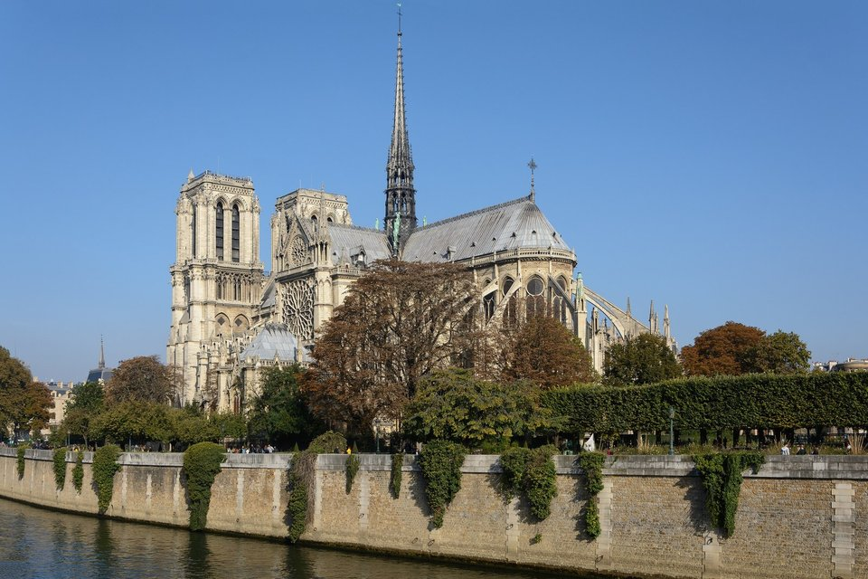

France · Paris
Notre-Dame de Paris audio guide
11 stops · 16 min · offline · plays as you arrive
The guide price is €2.99. This button is a placeholder. It does not open checkout and does not take payment. Email hello@getearwise.com.
A 11-stop offline audio guide to Notre-Dame de Paris in Paris, recorded in 10 languages and designed to play as you arrive. It covers the gothic cathedral on Île de la Cité, from the parvis and portals to the treasury and rebuilt roof. Download once; you will not need a signal on the ground.
Stops
- 1
The Parvis and Point Zero
This part of the route looks at The Parvis and Point Zero.
- 2
The West Front
The next story is about The West Front.
- 3
The Portal of the Last Judgement
Here the guide turns to The Portal of the Last Judgement.
- 4
The Nave
A short story at this point covers The Nave.
- 5
The Rose Windows
This stop is given to The Rose Windows.
- 6
The Choir and the Vow of Louis XIII
Stand here for the story of The Choir and the Vow of Louis XIII.
- 7
The Choir Screen
The narration at this pin is about The Choir Screen.
- 8
The Crown of Thorns
From this spot the guide talks through The Crown of Thorns.
- 9
The Spire and the Flying Buttresses
You hear about The Spire and the Flying Buttresses at this stage of the visit.
- 10
The Towers and the Chimeras
This is the moment on the route for The Towers and the Chimeras.
- 11
The Archaeological Crypt
This part of the route looks at The Archaeological Crypt.
On the map
All 11 stop pins for this guide are marked. Open map